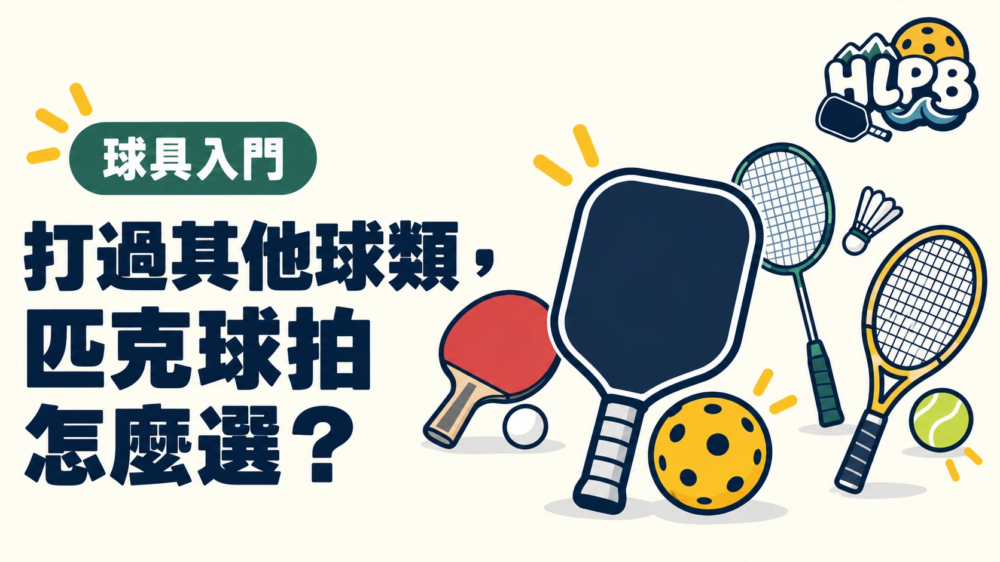

有球類底子，剛接觸匹克球通常比較容易找到擊球感覺。但選拍時，原本的習慣可以參考，不能直接照搬。
先看握得舒不舒服、揮動是否順手，再比較拍型與擊球反應。重量、握把、拍型與內芯都會影響選擇，不能只看單一規格。
不同背景，試拍先注意什麼？
以下是試拍方向，不是每種背景的固定配方。
| 原本打的球類 | 可以先比較 | 試拍要確認 |
|---|---|---|
| 桌球 | 握把尺寸、拍面寬度、揮動感 | 正反拍轉換是否順手，短球能不能控制 |
| 羽球 | 揮動負擔、握把尺寸、重心感 | 連續截擊後是否容易回到準備位置 |
| 網球 | 握柄長度、拍型、揮動感 | 慣用握法是否舒服，雙手反拍是否有足夠空間 |
桌球背景：別只找「拿起來很輕」的拍
如果你習慣快速調整拍面、正反拍切換，可以先比較不同球拍的靈活程度。
試拍時除了抽球，也要打短球、接發球與截擊。大力打得順，不代表輕碰時也好控制。不要只因為有桌球底子，就直接選最輕或主打旋轉的球拍。
羽球背景：重量數字只是起點
選匹克球拍時，不必硬找和羽球拍接近的重量。
可以把兩支候選拍交替試打，看看連續截擊、正反拍轉換，以及回球後重新準備的感覺。你需要的是能順暢操作的拍，而不是規格表上最輕的那支。
試拍要有連續回球，不能只拿著揮兩下就決定。
網球背景：先確認握柄，再決定要不要長拍
如果你會使用雙手反拍，先確認握柄是否放得下兩隻手、握起來會不會擠。
再比較不同拍型。不要只測底線抽球，也要測網前截擊與輕放短球。原本熟悉的揮拍習慣能幫助入門，但匹克球拍仍要能應付你正在學的打法。
買之前，先回答這四個問題
- 握把舒服嗎？有沒有需要一直用力抓緊的感覺？
- 回拍順嗎？打完一球，能不能順暢準備下一球？
- 短球好掌握嗎？除了打遠，也能控制輕碰的力道嗎？
- 比較過其他拍嗎？最好在相近條件下交替試打，不只試一支。
原本打什麼球，是選拍的起點；實際打起來是否合適，才是決定。
有桌球、羽球或網球背景的朋友，買第一支匹克球拍前，可以先把這張表傳給他，試拍時就知道要注意什麼。
各球類背景的試拍順序為本站編輯建議，並非固定適配結論。
參考來源：Selkirk 官方說明
最後查證：2026-10-10｜HLPB 編輯整理，參考來源見內文
返回文章列表